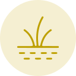

Create New Project — From Scratch
Upload your site boundary to generate Site Characterisation data, choose an NbS pathway for each ecosystem, then select activities and build a monitoring plan — all in one guided flow.
Screening resultRequires field verification
1
User Action
Upload site boundary
Drop your SHP / KML to generate site data.
2
User Action
Select NbS pathway
Protect, Manage or Restore per ecosystem.
3
User Action
Select NbS activities
Choose activities by ecosystem.
4
System generates
Review monitoring matrix
Indicators, methods, and frequency.
5
User Action
Customize and finalize
Edit, assign, add notes, export.
Step 1 — Upload your site boundary
Upload the boundary of your project area. NbS Tool reads the geometry to generate Site Characterisation data — ecosystems, area, and condition — used throughout this flow.
Drop your SHP file here to generate the Site Characterisation data
Drag & drop your file, or browse to upload. We'll detect ecosystems and condition automatically.
.zip (.shp, .shx, .dbf, .prj)
.kml
.kmz
Generating Site Characterisation…
kubu-raya-boundary.zip
Reading geometry…

Kubu Raya, West Kalimantan
Site Characterisation generated
kubu-raya-boundary.zip · processed just now
34,907.6
Total area (ha)
3
Ecosystems detected
14,854
Disturbed area (ha)
 Forest · 40%
Forest · 40%
 Mangrove · 28%
Mangrove · 28%

Peatland · 32%Step 2 — Select your NbS pathway
Review the screening result for each ecosystem, then choose an intervention pathway — Protect, Manage, or Restore. The tool highlights the best-fit pathway based on condition and threat.
Ecosystem
Condition
Main threat
Recommended intervention
Build your intervention
Select the ecosystem, then toggle the pathway you want to include.
Disclaimer: Field verification required. All information in the NbS Tool is intended to support your pre-feasibility study. Always verify on the ground before use.
Step 3 — Select planned NbS activities
Choose activities based on the ecosystems present in your project area and your NbS Pathway. Recommended indicators will be generated automatically in the next step.
Activities selected
0 / 12
Select at least 1 activity to proceed to the next step.
Step 4 — Review generated monitoring matrix
Based on your selected activities, the system has generated recommended monitoring content including indicators, methods, and frequency. Toggle to view optional indicators.
Selected NbS pathways
The pathways you chose in Step 2 — carried through to the monitoring plan.
| NbS Activity | Indicator level | Monitoring indicators | Method | Frequency |
|---|
This is an automatically generated draft. Field verification, stakeholder consultation, and data quality review are required before formal reporting. You can customize all indicators in the next step.
Step 5 — Customize and finalize your plan
Adjust indicators, methods, and frequency. Assign responsibilities and add local context, assumptions, and evidence. When ready, export your monitoring plan.
Your NbS pathways
Plan summary
Ecosystems0
NbS pathways0
Activities selected0
Recommended indicators0
Optional indicators0
Monitoring methods6
Customizations done0 / 4
Project created & monitoring plan generated
Your new project Kubu Raya Restoration has been created from your uploaded boundary, with NbS pathways and a monitoring plan saved. You can download it now or proceed to the MRV Dashboard.